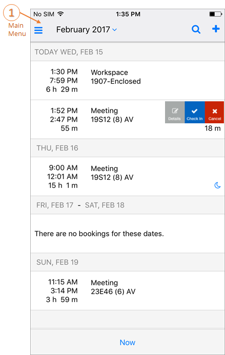
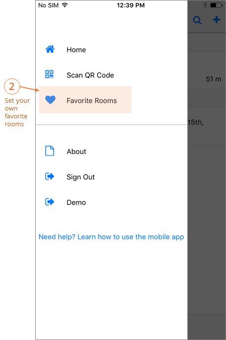
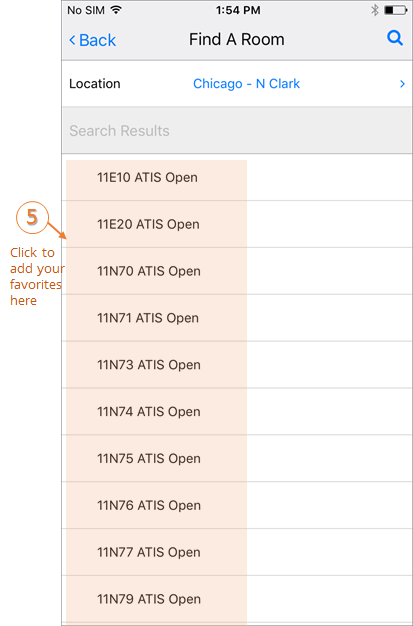

Assign Favorite Locations
Assigning favorite locations streamlines the booking process and filters your location search results.
To assign a location as a favorite:
- Tap the main menu icon in the upper left corner of the Home screen.

- Tap Favorite Locations.

- Click the + symbol to add Favorites.

- The Find a Location screen will appear. Search for rooms by Location.

- Choose a location from the Search Results list. When you search for locations during the booking process, those that are in your favorites list will be listed first.
